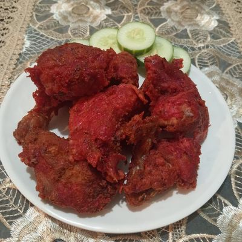

Ayam Goreng Malaysia

Ayam goreng Malaysia adalah hidangan ayam yang digoreng dengan bumbu khas Malaysia, seperti kunyit, bawang putih, dan rempah-rempah lainnya. Proses pembuatannya melibatkan marinasi ayam dalam campuran bumbu selama beberapa jam untuk memberikan rasa yang kaya dan meresap. Setelah itu, ayam digoreng hingga berwarna keemasan dan renyah di luar, sementara dagingnya tetap juicy di dalam. Ayam goreng Malaysia sering disajikan dengan nasi lemak atau sebagai lauk pendamping dalam hidangan sehari-hari.
Bahan-bahan:
- 500 gram ayam, potong sesuai selera
- 2 siung bawang putih, cincang halus
- 1 sendok teh kunyit bubuk
- 1 sendok teh garam
- 1/2 sendok teh merica bubuk
- Minyak goreng secukupnya
Langkah-langkah:
- Campurkan ayam dengan bawang putih, kunyit bubuk, garam, dan merica bubuk. Aduk rata dan biarkan marinasi selama minimal 30 menit.
- Panaskan minyak dalam wajan yang cukup untuk menggoreng ayam.
- Goreng ayam dalam minyak panas hingga berwarna keemasan dan matang sempurna. Angkat dan tiriskan.
- Sajikan ayam goreng Malaysia hangat dengan nasi lemak atau sebagai lauk pendamping.
Home